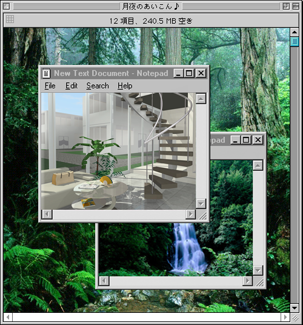

My intention with this website is to create a experience
that plays on nostalgia and how it relates to having grown up
being exposed to the internet. I want this website to mirror
my earliest memorable experiences of interacting with the internet.
I would also like to explore the ideas of what it
means to have existed in online spaces as a female growing up and
how that has had an influence on the way I think and interact with
the internet as well as the world.
Colour pallet
I'm going with a mostly pastel colour pallet for
the website. The reason is mostly that I want the website to be
calming and also I mostly interacted with websites that were soft and
pastely when I was younger because that was what I was drawn to the most as a
kid. I also wanted to use a colour pallet that’s considered more girly because
I think that is important to represent the experience of growing up on the web as a girl and those typical
spaces. Even though I see a lot more people talking about girly media I still think theres a long way to go in representing
women’s experiences.
Genral Moodboard
I will link some of the websites I’m inspired by in the fun links section. I just wanted to talk a little bit about
the other things this website is inspired by.
Kawaii pixel art is one of the things, old sanrio art and games, new super mario bros, other old nintendo ds games,
y2k rave posters, neocities and tumblr.
Discussion
I want my website to appear kind of cheesy,
like a typical y2k personal website. I want to
make it slightly modern in a few way however,
those being; I want to make the site a bit more
minimalist than it typically would be and I want
to make the site appear a bit more refined using features
and element that would be incorporate in more modern websites.
I want whoever comes to my website to feel like they are on a personal site made in
the 2000s or like they’ve come across a neocities site maked to emulate the old web. In line with the
theme the user will be presented with the opportunity to explore. One of my personal favorite things about browsing
neocities is that you never know where you’ll end up or what cool things you’ll discover. I’d also like any visitors to
feel safe and welcomed, this is another thing I’ve noticed about retro themed sites, I want visitors to explore freely. Most of the elements
that encourage exploring will be implemented on my portfolio page. I would like to add other pages, maybe even a pixel art dress up game or a quiz.
Further Explanation
Fun Page Design
The fun page in the port folio section is meant to have. Plantwave aesthetic. Plantwave is a variation of vaporwave which was a popular internet sub
culture and visual aesthetic in the early 2010s. It is something that I experienced on tumblr while growing up.

I was largely inspired by the visual style of 猫 シ Corp on of my favorite vaporwave artist.
Theme change
The “dark mode” or the different theme of my homepage is inspired by old personal websites from the early 2000s. The computer angel image was taken from a old website archived on the way back machine linked here: Glad to be alive (note when you press the page it downloads some sort of audio file that I’m not really sure about so just be cautious)
I also added a WebNeko to the homepage, you can find the page here: WebNeko it fits the theme of the old web and while I was looking at old pages I discovered it. It is a classic web pet, to interact with it you click on it and it chases your cursor.